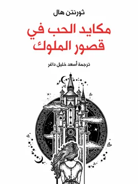

مكايد الحب في قصور الملوك

قراءة عربية أصلية محددة النطاق في الصفحات 9 إلى 14 من ملف PDF المرتبط، وليست تلخيصا كاملا للكتاب. نناقش ما تدعمه هذه المقاطع فقط.
مكايد حب حقيقية من قصور أوروبا وقياصرتها
يفتتح المترجم أسعد خليل داغر الكتاب بمقدمة يفرق فيها بين قصص العشق الموضوعة التي تخترعها مخيلة الكاتب وبين مشتملات هذا الكتاب؛ فهي حوادث حب وغرام حقيقية جرت في قصور أوروبا وقياصرتها، تخللتها المكايد والخدائع، وهي منقولة عن شهود ثقات رأوها ودونوها في تواريخهم. ويبين أن الغرض من الترجمة ليس التسلية بفواجع المحبين ومصارع العشاق، بل الاعتبار بما فيها من أمور مخالفة لما يعهده الناس، ويستخلص ثلاث عبر: أن تربة الثروة والجاه والقوة ليست بالضرورة أصلح لإذكاء غرس الفضيلة من تربة الفقر والضعف، وأن قصور الملوك والأغنياء ليست أعذب موردًا للسعادة من بيوت عامة الناس، وأن المال والجمال قد يصيران من شر النقم إذا أساء الإنسان استخدامهما. ثم تبدأ قصة «حبيب إمبراطورة» بعرض كاترين الثانية إمبراطورة روسيا التي تملكتها شهوتان: عشق الرجال والشغف بالمجد حتى أفسدته فتحول غرورًا وباطلًا، فكانت تقرب عشاقها وتسبغ عليهم الجاه ثم تقصيهم كما تغير ملابسها، وينقل وصف فولتير المتحمس لها، ووصفها لنفسها وهي تستعد لمَرقص فتعقص شعرها وتزينه بباقة ورد.
زاوية وحدود القراءة
قراءة موجزة من ص ٩ إلى ص ١٤ من أصل ١٧٨ صفحة، تعرض مقدمة المترجم وبداية أولى القصص، لا الكتاب كاملًا.
الطبعة والقراءة
هذه الترجمة العربية صادرة ومتاحة مجانًا من مؤسسة هنداوي بشكل قانوني؛ حيث إن نص العمل الأصلي يقع في نطاق الملكية العامة تبعًا لقوانين الملكية الفكرية.
تنزيل PDF المجاني ↓ القراءة والمصدر الرسمي ↗